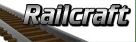
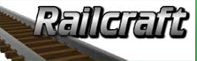

Подключайся и играй на наших серверах!
Админ: +38(068) 333-22-10
+38(099) 750-50-50
По донату: 067-33-22-180
Скайп:  minecraft-km7
minecraft-km7
Мир Minecraft
Подключайся и играй на наших серверах!
Minecraft — компьютерная игра в стиле песочницы с открытым миром,
в которой перед игроком не ставятся
какие-либо определенные цели — игроки сами выбирают,
что им делать в игре. Несмотря на это,игра содержит систему
достижений — поощрительных наград за выполнение определенных действий.
Встречайте: белые медведи в холодных биомах!
В мобильной версии теперь можно приручить кролика, он станет верным другом
Подключайся и играй на наших серверах!
Админ:+38(068) 333-22-10
+38(099) 750-50-50
По донату:067-33-22-180
 
